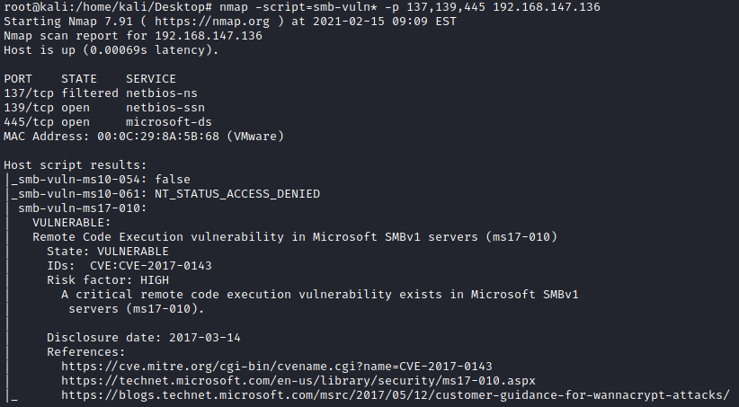

smb-vuln*
smb-vuln* nmap -script=smb-vuln* -p 137,139,445 <address>
The script connects to the $IPC tree, executes a transaction on FID 0 and checks if the error “STATUS_INSUFF_SERVER_RESOURCES” is returned to determine if the target is not patched against ms17-010. Additionally, it checks for known error codes returned by patched systems.
